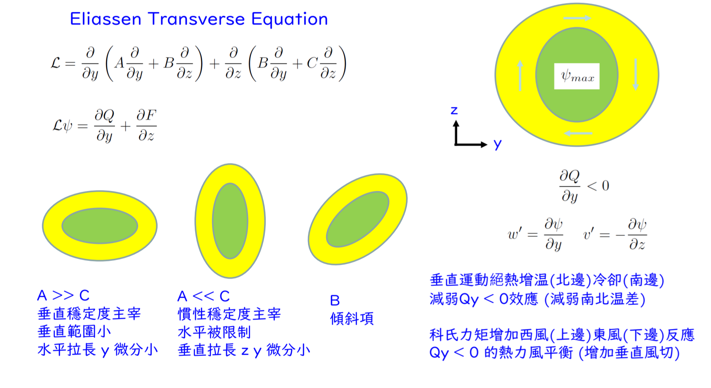

Typhoon-Dynamics - Week 3#
日期: 2026.03.11
一、 準平衡動力與颱風環流基礎#
1. 為什麼要談「準平衡 (Quasi-balance)」？#
在物理學中，如果一個系統達到完美的「平衡」，它就會保持靜止或是等速直線運動，什麼事都不會發生。但颱風是一個劇烈狂暴、不斷發展且移動的氣象系統，它絕對不是完美的平衡體。
然而，大氣科學家發現颱風在絕大部分的空間和時間裡 非常接近 平衡狀態（垂直方向極度接近靜力平衡，水平方向極度接近梯度風平衡），大自然允許系統出現微小的偏差，我們稱之為「準平衡狀態」。這堂課後續所有複雜的偏微分方程式，其實都不是為了描述那 90% 的無聊平衡，而是為了解析那 10% 破壞平衡的微小擾動。
2. 颱風的骨架：主環流 (Primary Circulation)#
角色： 系統的「慣性」與「儲能庫」
特徵： 由極強的水平切線風 (\(v\)) 構成，也就是我們在雲圖上看到那團巨大、逆時針高速旋轉的氣流。
運作機制： 氣壓梯度力（向內吸）與科氏力加離心力（向外甩）在這裡達成 梯度風平衡，主環流主導了颱風絕大部分的動能，它就像是一個高速旋轉的巨大陀螺本體，極度抗拒任何改變它狀態的外力。
3. 颱風的靈魂：次環流 (Secondary Circulation)#
角色： 系統的「調節器」與「引擎傳動軸」
特徵： 隱藏在強大旋轉背後的微弱環流，它由徑向風 (\(u\)) 與垂直風 (\(w\)) 組成，空氣從 海面底層吸入（內流輻合）、在眼牆猛烈爬升（上升氣流）、最後在對流層頂部向外散開（外流輻散）
運作機制： 當海面的「摩擦力」讓底層風速變慢，或是眼牆的「潛熱釋放」讓核心變熱時，主環流的完美平衡就被打破了。大自然為了解決這個危機，被迫啟動了次環流，次環流的任務就是透過重新分配質量與熱量，努力把系統拉回新的平衡狀態。在這個過程中，底層的內流順便把源源不絕的水氣（燃料）送進了中心，反而讓颱風越長越大。
4. 系統的共生關係#
我們可以把颱風想像成一個正在騎行腳踏車的人：
主環流是那兩個高速轉動的輪子，因為角動量與慣性使得讓整台車保持直立不倒
次環流則是騎車的人緊握龍頭的雙手，路面總有坑洞、側邊總有強風（破壞平衡的摩擦力與熱源），雙手必須隨時微微轉動龍頭來微調重心（調節機制）
如果沒有龍頭的微調，腳踏車遇到坑洞一定會摔倒；同樣地，如果沒有次環流不斷地調節與輸送水氣，颱風的主環流很快就會因為摩擦力消耗殆盡而消散。這兩者缺一不可，共同維持了這個巨大風暴的生命週期。
二、 Gradient Wind Balance 與 Rossby number#
假設與已知 (Assumptions & Preliminaries)#
【已知 1】 梯度風平衡 (Gradient Wind Balance)：
\[\begin{split}\begin{gather*} \frac{v^{2}}{r} + fv &\overset{\text{已知 1}}{=}& \frac{1}{\rho} \frac{\partial P}{\partial r}\\ v^{2} + rfv &=& \frac{r}{\rho} \frac{\partial P}{\partial r}\\ v &=& \frac{-rf \pm \sqrt{(rf)^2 + 4r(\frac{1}{\rho}\frac{\partial p}{\partial r})}}{2} \\ \end{gather*}\end{split}\]【定義 1】 Rossby number：
\[\begin{split}\begin{gather*} R_o &\overset{\text{def}}{=}& \frac{\text{慣性力 (Inertial force)}}{\text{科氏力 (Coriolis force)}} \\ &=& \frac{\text{離心力 (Inertial force)}}{\text{科氏力 (Coriolis force)}} \\ &=& \frac{v^2/r}{fv} \\ &=& \frac{v}{fr} &=& \frac{U}{fL}\\ \end{gather*}\end{split}\]\(U\) : Characteristic velocity of the fluid (e.g., wind speed, ocean current). \([\text{m} \cdot \text{s}^{-1}]\)
\(L\) : Characteristic horizontal length scale (e.g., diameter of a storm). \([\text{m}]\)
\(f\) : Coriolis frequency , \([\text{s}^{-1}]\)
圓周運動下慣性力的表現形式完全由曲率產生的離心力來代表
【已知 2】 選擇 地轉平衡、旋衡風平衡、梯度風平衡：
\[\begin{split}\begin{gather*} \frac{v^2}{r} + fv &\overset{\text{已知 1}}{=}& \frac{1}{\rho}\frac{\partial p}{\partial r} \\ \frac{v^2/r}{fv} + \frac{fv}{fv} &=& \frac{\frac{1}{\rho}\frac{\partial p}{\partial r}}{fv} \\ R_o + 1 &\overset{\text{定義 1}}{=}& \frac{\frac{1}{\rho}\frac{\partial p}{\partial r}}{fv} \\ \end{gather*}\end{split}\]地轉平衡 \((R_o \ll 1)\) : 科氏力佔絕對優勢，大自然選擇用科氏力去抵抗氣壓梯度力 (\(fv \approx \text{PGF}\))，像是溫帶氣旋、鋒面系統、海洋的洋流，風速不快且範圍極大（半徑 \(r\) 很大）
旋衡風平衡 \((R_o \gg 1)\) : 離心力佔絕對優勢。大自然選擇用離心力去抵抗氣壓梯度力 (\(\frac{v^2}{r} \approx \text{PGF}\))，像是颱風核心
梯度風平衡 \((R_o \sim 1)\) : 離心力與科氏力旗鼓相當，兩者都不能忽略，像是颱風外圍
【定義 2】 \(v_g\) 地轉風 ：
\[f v_g \overset{\text{def}}{=} \frac{1}{\rho}\frac{\partial p}{\partial r}\]【已知 3】 颱風的 \(R_o\) ：
\[\begin{split}\begin{gather*} R_{o,\text{Eyewall}} &\overset{\text{已知 3}}{=}&\frac{v_{\text{Eyewall}}}{fr_{\text{Eyewall}}} \\ &=& \frac{50\text{ m/s}}{(5 \times 10^{-5}\text{ s}^{-1}) \times (5 \times 10^4 \text{ m})} \\ &=& 20 \end{gather*} \quad , \quad \begin{gather*} R_{o,\text{Outer}} &\overset{\text{已知 3}}{=}&\frac{v_{\text{Outer}}}{fr_{\text{Outer}}} \\ &=& \frac{15\text{ m/s}}{(5 \times 10^{-5}\text{ s}^{-1}) \times (5 \times 10^5 \text{ m})} \\ &=& 0.6 \end{gather*} \end{split}\]\(f = 2\Omega \sin\phi \approx 2 \times (7.29 \times 10^{-5} \text{ s}^{-1} ) \times \sin(20^\circ) \approx 5 \times 10^{-5} \text{ s}^{-1}\)
\(r_{\text{Eyewall}} = 50 \text{ km}\) 、 \(r_{\text{Outer}} = 500 \text{ km}\)
\(v_{\text{Eyewall}} = 50 \text{ m/s}\) 、 \(v_{\text{Outer}} = 15 \text{ m/s}\)
推導#
當 \(R_o \ll 1\)#
物理意義： 當羅斯貝數極小時可以使用地轉平衡（Geostrophic Balance），也就是代表旋轉造成的「離心力」微乎其微，可以被忽略不計，此時大氣的運動完全由「科氏力」與「氣壓梯度力」互相抗衡，實際風速就等於地轉風速。
當 \(R_o \gg 1\)#
物理意義： 當羅斯貝數極大時可以使用旋衡平衡（Cyclostrophic Balance），也就是代表「離心力」佔了絕對主導地位，而地球自轉帶來的「科氏力」相較之下微不足道，此時是純粹依靠「離心力」來抵抗向內的「氣壓梯度力」。
根據 【已知 3】 颱風約 \(50 \text{ km}\) 就是 \(R_o \gg 1\)
當 \(R_o \sim 1\)#
物理意義： 這是完整的梯度風平衡（Gradient Wind Balance）。當羅斯貝數接近 1 時，代表「離心力」與「科氏力」勢均力敵，誰也不能被當作誤差忽略掉。這兩者必須聯手，共同與「氣壓梯度力」達成三方動態平衡。
根據 【已知 3】 颱風約 \(500 \text{ km}\) 就是 \(R_o \sim 1\)
三、 軸對稱颱風模型的方程式#
我們用圓柱座標系統 \((r, \lambda, z)\) 來描述颱風，這些方程式描述了流體的基本物理守恆定律：
\(\frac{v^{2}}{r}+fv=\frac{\partial\phi}{\partial r}\)
變數
\(v\)：切線風速 (Tangential wind speed) \([\text{m} \cdot \text{s}^{-1}]\)
\(r\)：徑向距離 (Radial distance) \([\text{m}]\)
\(f\)：科氏參數 (Coriolis parameter) \(\sim 10^{-5}[\text{s}^{-1}]\)
\(\phi\)：重力位勢 / 動力氣壓 (Geopotential / Kinematic pressure) \([\text{m}^2 \cdot \text{s}^{-2}]\)
意義： 這是徑向（向內/向外）的 梯度風平衡 (Gradient Wind Balance) ，它表示離心力 (\(\frac{v^2}{r}\))、科氏力 (\(fv\)) 與氣壓梯度力 (\(\frac{\partial\phi}{\partial r}\)) 達到完美的動態平衡
\(\frac{\partial v}{\partial t}+u(f+\zeta)+w\frac{\partial v}{\partial z}=X\)
變數
\(v\)：切線風速 (Tangential wind speed) \([\text{m} \cdot \text{s}^{-1}]\)
\(t\)：時間 (Time) \([\text{s}]\)
\(u\)：徑向風速 (Radial wind speed) \([\text{m} \cdot \text{s}^{-1}]\)
\(f\)：科氏參數 (Coriolis parameter) \(\sim 10^{-5}[\text{s}^{-1}]\)
\(\zeta\)：相對渦度 (Relative vorticity) \([\text{s}^{-1}]\)
\(w\)：垂直風速 (Vertical wind speed) \([\text{m} \cdot \text{s}^{-1}]\)
\(z\)：垂直高度 (Vertical height) \([\text{m}]\)
\(X\)：動量強迫 / 摩擦力 (Momentum forcing / Friction) \([\text{m} \cdot \text{s}^{-2}]\)
意義： 這是切線方向的 軸對稱切線動量方程式 (Axisymmetric Tangential Momentum Equation) ，描述切線風速 \(v\) 隨時間的變化，是由於徑向風 \(u\) 與垂直風 \(w\) 帶來了不同區域的角動量，加上外界摩擦力 \(X\) 所導致 。
\(\frac{\partial\phi}{\partial z}=\frac{g}{\theta_{0}}\theta\)
變數
\(\phi\)：重力位勢 / 動力氣壓 (Geopotential / Kinematic pressure) \([\text{m}^2 \cdot \text{s}^{-2}]\)
\(z\)：垂直高度 (Vertical height) \([\text{m}]\)
\(g\)：重力加速度 (Gravitational acceleration) \(9.81[\text{m} \cdot \text{s}^{-2}]\)
\(\theta_{0}\)：參考態位溫 (Reference potential temperature) \(\sim 300[\text{K}]\)
\(\theta\)：雷諾分解後的位溫擾動 (Potential temperature) \([\text{K}]\) ，通常都 \(1\text{K} \sim 5\text{K} \) 這種order，不是 \(300\text{K}\) 這種order
意義： 這是垂直方向的 擾動場的流體靜力平衡 (Hydrostatic Balance for Perturbationse) ，表示垂直氣壓梯度力與重力（這裡用位溫 \(\theta\) 形式表示的浮力）互相抵銷
\(\frac{\partial\rho ru}{r\partial r}+\frac{\partial\rho w}{\partial z}=0\)
變數
\(\rho\)：空氣密度 (Air density) \(\sim 1[\text{kg} \cdot \text{m}^{-3}]\)
\(r\)：徑向距離 (Radial distance) \([\text{m}]\)
\(u\)：徑向風速 (Radial wind speed) \([\text{m} \cdot \text{s}^{-1}]\)
\(w\)：垂直風速 (Vertical wind speed) \([\text{m} \cdot \text{s}^{-1}]\)
\(z\)：垂直高度 (Vertical height) \([\text{m}]\)
意義： 這是 軸對稱連續方程式 (Axisymmetric Continuity Equation) 確保流體質量守恆，有空氣輻合進來就必須有空氣上升或下降流出
\(\frac{\partial\theta}{\partial t}+u\frac{\partial\theta}{\partial r}+w\frac{\partial\theta}{\partial z}=\frac{\theta}{T}\frac{Q}{c_{p}}\)
變數
\(\theta\)：位溫 (Potential temperature) \([\text{K}]\)
\(t\)：時間 (Time) \([\text{s}]\)
\(u\)：徑向風速 (Radial wind speed) \([\text{m} \cdot \text{s}^{-1}]\)
\(w\)：垂直風速 (Vertical wind speed) \([\text{m} \cdot \text{s}^{-1}]\)
\(r\)：徑向距離 (Radial distance) \([\text{m}]\)
\(z\)：垂直高度 (Vertical height) \([\text{m}]\)
\(T\)：絕對溫度 (Absolute temperature) \([\text{K}]\)
\(Q\)：非絕熱加熱率 (Diabatic heating rate) \([\text{W} \cdot \text{kg}^{-1}]\)
\(c_{p}\)：等壓比熱 (Specific heat at constant pressure) \(1004[\text{J} \cdot \text{kg}^{-1} \cdot \text{K}^{-1}]\)
意義： 這是 軸對稱熱力學能量方程式 (Axisymmetric Thermodynamic Energy Equation) 描述溫度的變化是由於冷暖空氣的平流，以及外界的非絕熱加熱 \(Q\)（例如水氣凝結放熱）所造成 。
變數的主次#
主環流變數： \(v\) (切線風)、\(\phi\) (重力位勢)、\(\theta\) (位溫):它們是颱風的主要結構，通常處於水平是梯度風與垂直是靜力平衡
次環流變數： \(u\) (徑向風)、\(w\) (垂直風):它們相對微弱，負責在主環流失去平衡時進行調整。
四、 熱力風平衡與次環流方程式#
5 條基礎方程式（徑向動量、切線動量、靜力平衡、質量連續、熱力學能量），就像是蓋房子的基本建材：鋼筋、水泥、磚塊、水管，它們描述了自然界 最基礎的 守恆定律（質量守恆、能量守恆、動量守恆）。
如果我今天問你：「當地震來的時候，這棟大樓會怎麼搖晃？」你盯著一塊磚塊（例如：靜力平衡方程式），或是盯著一根鋼筋（例如：梯度風方程式），是絕對看不出整棟大樓會怎麼晃動的，因為這 5 條方程式是「各自獨立」且「微觀」的。我們需要一個透過 熱力風平衡 連結 靜力平衡（垂直） 與 梯度風平衡（水平），搭建一個「風速的垂直切變」跟「水平的溫度梯度」之間的橋樑。
如果我今天問你：「這棟大樓和那棟大樓抵抗搖晃的能力差別？」，我們可以 定義 出 \(A, B, C\) 當作大樓的「避震器係數」，\(A\) (靜力穩定度)： 垂直方向避震器的硬度。\(C\) (慣性穩定度)： 水平方向避震器的硬度。\(B\) (斜壓性)： 避震器傾斜的程度。
透過基礎的方程式可以推導出 \(\rho A , \rho B , \rho C \) ，這些變數決定了流體抵抗變形的能力（恢復力），我們統稱為「穩定度參數」。可以想像成空間中三個方向的彈簧，決定了次環流被擠壓的形狀。

\(\rho A \overset{\text{def}}{=} \frac{g}{\theta_{0}}\frac{\partial\theta}{\partial z}\)
意義： \(A\) 代表靜力穩定度 (Static Stability) ，數值越高越能抵抗流體「垂直運動」的能力
\(\rho B \overset{\text{def}}{=} -\frac{g}{\theta_{0}}\frac{\partial\theta}{\partial r}=-(f+\frac{2v}{r})\frac{\partial v}{\partial z}\)
意義： \(B\) 代表斜壓性 (Baroclinicity) 或熱力風垂直風切 ，它連接著徑向的溫度梯度與垂直的風速變化，代表大氣的傾斜程度。數值越高越能抵抗流體「純垂直運動」和「純水平運動」的能力，強迫流體必須沿著某個「特定的傾斜角度」滑動
\(\rho C \overset{\text{def}}{=} (f+\frac{2v}{r})(f+\frac{\partial rv}{r\partial r})\)
意義： \(C\) 代表慣性穩定度 (Inertial Stability) ，數值越高越能抵抗流體「水平運動」的能力
如何影響次環流形狀？ 因為連續方程式的關係，我們可以用一個流函數 \(\psi\) 來代表次環流，它在空間中會形成一個封閉的橢圓形狀
當 \(A \gg C\)（靜力穩定度主宰）： 垂直方向的「彈簧」很硬，很難上下走。所以次環流會被壓扁，形成水平拉長、垂直範圍小的橢圓
當 \(C \gg A\)（慣性穩定度主宰）： 水平方向的「彈簧」很硬，很難往內外走。所以次環流會變成垂直拉長、水平被限制的橢圓
參數 \(B\) 的影響： 它相當於一個交叉項，會造成這個次環流橢圓發生傾斜 (Tilt)
Eliassen Transverse Equation in x-y-z grid (次環流方程式 x-y-z座標)#
證明目標#
也可以在圓柱上證明這件事情 \(\frac{\partial}{\partial r}\left[ \frac{A}{r}\frac{\partial \psi}{\partial r} + \frac{B}{r}\frac{\partial \psi}{\partial z} \right] + \frac{\partial}{\partial z}\left[ \frac{B}{r}\frac{\partial \psi}{\partial r} + \frac{C}{r}\frac{\partial \psi}{\partial z} \right] = \frac{\partial J}{\partial r} - \frac{\partial F}{\partial z}\)
假設與已知 (Assumptions & Preliminaries)#
【已知 1】 沿鋒面動量方程式 (Along-front Momentum)：
\[\begin{split}\begin{gather*} \frac{\partial u}{\partial t} + v\frac{\partial u}{\partial y} + w\frac{\partial u}{\partial z} - fv &=& X \\ \frac{\partial u}{\partial t} &=& - v\frac{\partial u}{\partial y} - w\frac{\partial u}{\partial z} +fv +X \\ \frac{\partial u}{\partial t} &=& - v \left( \frac{\partial u}{\partial y} - f \right) - w\frac{\partial u}{\partial z} +X \\ \end{gather*}\end{split}\]【已知 2】 跨鋒面地轉平衡 (Geostrophic Balance)： （因為 \(x\) 方向無梯度，地轉風完全在 \(u\) 方向）
\[fu = -\frac{\partial \phi}{\partial y}\]【已知 3】 流體靜力平衡 (Hydrostatic Balance)：
\[\frac{\partial \phi}{\partial z} = \frac{g}{\theta_0}\theta'\]【已知 4】 熱力學方程式 (Thermodynamic Equation)：
\[\frac{\partial \theta}{\partial t} + v\frac{\partial \theta}{\partial y} + w\frac{\partial \theta}{\partial z} = \frac{\theta}{T}\frac{Q}{c_p}\]【已知 5】 2D 連續方程式 (Continuity Equation)：
\[\frac{\partial(\rho v)}{\partial y} + \frac{\partial(\rho w)}{\partial z} = 0\]【已知 6】 偏導數交換律 (Schwarz’s Theorem)：
\[\frac{\partial}{\partial y}\left[ \frac{\partial^2\phi}{\partial t\partial z} \right] = \frac{\partial}{\partial z}\left[ \frac{\partial^2\phi}{\partial t\partial y} \right]\]【定義 1】 次環流流線函數 (\(\psi\))：
為了自動滿足【已知 5】，我們定義：
\[\rho v \overset{\text{def}}{=} -\frac{\partial \psi}{\partial z} \quad , \quad \rho w \overset{\text{def}}{=} \frac{\partial \psi}{\partial y}\]【定義 2】 穩定度結構參數 (\(A, B, C\))：
\[\rho A \overset{\text{def}}{=} \frac{g}{\theta_0}\frac{\partial\theta}{\partial z}\]\[\rho B \overset{\text{def}}{=} -\frac{g}{\theta_0}\frac{\partial\theta}{\partial r} = -\left(f+\frac{2v}{r}\right)\frac{\partial v}{\partial z}\]\[\rho C \overset{\text{def}}{=} \left(f+\frac{2v}{r}\right)(f+\zeta)\]【定義 3】 動力與熱力強迫項 (Forcing Terms, \(F, J\))：
\[F \overset{\text{def}}{=} \left(f+\frac{2v}{r}\right)X\]\[J \overset{\text{def}}{=} \frac{g}{\theta_0}\frac{\theta}{T}\frac{Q}{c_p}\]【已知 7】熱力演變 (Thermal Tendency)：
\[\begin{split}\begin{gather*} \frac{\partial^2 \phi}{\partial t \partial z} &=& \frac{\partial}{\partial t}\left[\frac{\partial \phi}{\partial z} \right]\\ \frac{\partial^2 \phi}{\partial t \partial z} &\overset{\text{已知 3}}{=}& \frac{\partial}{\partial t}\left[ \frac{g}{\theta_0}\theta' \right]\\ \frac{\partial^2 \phi}{\partial t \partial z} &=& \frac{g}{\theta_0} \frac{\partial \theta'}{\partial t} \\ \frac{\partial^2 \phi}{\partial t \partial z} &=& \frac{g}{\theta_0} \frac{\partial \theta}{\partial t} \\ \frac{\partial^2 \phi}{\partial t \partial z} &\overset{\text{已知 4}}{=}& \frac{g}{\theta_0} \left( -v\frac{\partial \theta}{\partial y} - w\frac{\partial \theta}{\partial z} + \frac{\theta}{T}\frac{Q}{c_p} \right) \\ \frac{\partial^2 \phi}{\partial t \partial z} &\overset{\text{定義 2,3}}{=}& -v(-\rho B) - w(\rho A) + J \\ \frac{\partial^2 \phi}{\partial t \partial z} &=& v\rho B - w\rho A + J \\ \end{gather*}\end{split}\]【已知 8】動力演變 (Momentum Tendency)：
\[\begin{split}\begin{gather*} \frac{\partial^2 \phi}{\partial t \partial y} &=& \frac{\partial}{\partial t} \left[\frac{\partial \phi}{\partial y}\right] \\ \frac{\partial^2 \phi}{\partial t \partial y} &\overset{\text{已知 2}}{=}& \frac{\partial}{\partial t}\left[-fu \right] \\ \frac{\partial^2 \phi}{\partial t \partial y} &=& -f\frac{\partial u}{\partial t} \\ \frac{\partial^2 \phi}{\partial t \partial y} &\overset{\text{已知 1}}{=}& -f \left[ -v\left( \frac{\partial u}{\partial y} - f \right) - w\frac{\partial u}{\partial z} + X \right]\\ \frac{\partial^2 \phi}{\partial t \partial y} &=& -v \cdot f\left( f - \frac{\partial u}{\partial y} \right) + w \cdot f\frac{\partial u}{\partial z} - fX \\ \frac{\partial^2 \phi}{\partial t \partial y} &\overset{\text{定義 2,3}}{=}& -v\rho C + w\rho B - F \end{gather*}\end{split}\]【定義 4】 notation of Eliassen Transverse Equation in Cylindrical Corordnate：
\[ \mathcal{L}[\cdot] = \frac{\partial}{\partial y}\left[ A\frac{\partial [\cdot]}{\partial y} + B\frac{\partial [\cdot]}{\partial z} \right] + \frac{\partial}{\partial z}\left[ B\frac{\partial [\cdot]}{\partial y} + C\frac{\partial [\cdot]}{\partial z} \right]\]
證明#
五、 橢圓判別式定理#
次環流偏微分方程式 \(A \frac{\partial^2 \psi}{\partial r^2} + 2B \frac{\partial^2 \psi}{\partial r \partial z} + C \frac{\partial^2 \psi}{\partial z^2} = Q\) 若滿足 \(AC - B^2 > 0\) 在數學分類上就屬於「橢圓型偏微分方程 (Elliptic PDE)」，衡量穩定度的方式可以使用Axisymmetric Stability Matrix
橢圓型 PDE 的特性：「彈簧床效應」(局部且封閉)
當系統滿足 \(AC - B^2 > 0\) 時，代表內部有一股強大的「恢復力」（也就是 \(A\) 和 \(C\)）
如果你在眼牆釋放潛熱（強迫項 \(Q\)），這就像是在一張拉緊的彈簧床上用力往下壓，彈簧床會凹陷但變形只會侷限在壓下去的周圍，並且形成一個「封閉的變形圈」
在颱風中： 這個封閉的變形圈，就是一個完整的次環流（底層流入 \(\rightarrow\) 眼牆上升 \(\rightarrow\) 高層流出 \(\rightarrow\) 外圍下沉），這是一個完美的閉合調節圈，能將底層的水氣精準地送進眼牆，成為颱風持續燃燒的完美燃料輸送帶。
雙曲型 PDE 的特性：「水波效應」(發散且無法閉合)
如果今天大氣的狀態變成 \(AC - B^2 < 0\)，會發生什麼事？直覺上會以為偏微分方程「突變」成了雙曲型（波動方程式）。但嚴格來說是 方程式直接失效了
Sawyer-Eliassen 方程式是一個「診斷方程」，推導它的前提是大自然跟我們簽訂了一份合約：假設系統隨時處於熱中性風與梯度風平衡。當 \(AC - B^2 < 0\) 時，代表大自然單方面撕毀了平衡合約，既然系統不再平衡，S-E 方程式就作廢了，我們必須退回到最原始、保留了時間變化的「原始方程式 (Primitive Equations)」去求解。
在颱風中： 如果大氣變成這樣，眼牆釋放的熱量會激發出「重力慣性波 (Gravity-Inertia Waves)」。能量與水氣會像水波一樣向四面八方輻散逃逸，根本無法形成一個在眼牆附近上下循環的閉合迴圈，沒有了這個輸送帶，颱風很快就會因為燃料耗盡而死亡。
穩定的颱風： 颱風旋轉極快、慣性穩定度 \(C\) 非常巨大，因此 \(AC\) 輕輕鬆鬆就能大於 \(B^2\)，系統超級穩定、次環流完美閉合。
系統的洩壓閥 (對稱性不穩定)： 如果今天有極強的環境風切讓破壞力遽增，導致 \(B^2 > AC\)。這時系統的剛性拉不住撕裂力，大氣就會發生大名鼎鼎的「對稱性不穩定 (Symmetric Instability)」。但大自然並不喜歡不穩定，它不會任由颱風直接瓦解！作為應對，大氣會立刻激發出「傾斜對流 (Slantwise Convection)」作為系統的洩壓閥。大自然透過這些傾斜的上升雲帶快速消耗掉多餘的不穩定能量，強迫內部參數重新回到 \(AC - B^2 > 0\) 的穩定狀態。
六、 位渦 (PV) 的物理意義與分佈#
1. 數學與物理的完美對接：\((\rho A)(\rho C) - (\rho B)^2 = \left(f+\frac{2v}{r}\right) \left(\frac{\rho_0 g}{\theta_0}\right) PV\)#
我們在數學上證明了系統必須滿足 \(AC - B^2 > 0\) 才能維持閉合的橢圓型偏微分方程。但在大氣動力學中，這三個參數對應著：\(A\) (靜力穩定度)、\(C\) (慣性穩定度)、\(B\) (斜壓性)。 根據 Ertel 位渦定理的數學推導，將絕對渦度向量與位溫梯度向量做內積展開後，我們驚訝地發現：正壓項的乘積剛好是 \(AC\)，而斜壓項的內積剛好對應 \(-B^2\)，這意味著：數學判別式 \(AC - B^2\) 的本質，直接正比於大氣的位渦 (\(\text{PV}\))！
2. 物理意義：剛性與資訊的 .npz 壓縮檔#
位渦大於零，代表流體具有強大的 「剛性」 ，就像高速旋轉的陀螺難以被推倒。在颱風眼牆附近，空氣同時具有極強的旋轉（高 \(C\)）與強烈的成層（高 \(A\)），因此這裡的位渦數值爆表。這使得眼牆區的大氣變得像是一堵「看不見的剛體牆壁」，任何試圖從水平方向穿透這面牆的氣流，都會被強大的慣性穩定度給彈開。
同時，根據位渦反演原則 (PV Invertibility)，位渦就像是大氣狀態的高效 .npz 壓縮檔。只要系統滿足動力平衡條件，我們就能從這團高資訊密度的 PV 矩陣中，完美解碼還原出整個颱風的風場與溫度場。
3. 次環流的阻力與摩擦力破壞#
眼牆上升的空氣到了高層，面臨往內或往外的選擇。中心是極高位渦的「鐵牆」，外圍是低位渦的鬆散區，氣流自然選擇「阻力最小路徑」向外輻散。
但在低層海面，情況完全不同，表面摩擦力並不是消耗位渦，而是直接打破了力學平衡。 摩擦力使得風速減慢，導致向外的離心力與科氏力大減，無力抵抗中心強大的向內氣壓梯度力。空氣被迫往中心輻合，補足了次環流的最底層迴圈。
這就是位渦的空間分佈與邊界層摩擦力，如何共同指揮著次環流，維持著颱風這個巨大熱機的運轉。
CISK 理論與摩擦力的雙重角色 (01:15:39~01:28:00)
回顧傳統的 CISK (第二類條件性不穩定) 理論，說明邊界層輻合如何帶動對流加熱，使系統持續增強。
點出摩擦力是雙面刃：它既會消耗颱風的動能，卻又是激發輻合、輸送水氣的關鍵。
就像是燃燒柴火，摩擦力看似是在消耗能量，但正是它把新的柴火（水氣）推入中心，讓火越燒越旺。
角動量守恆與茶壺實驗 (01:35:17~01:41:48)
解釋颱風增強的根本原理是「絕對角動量守恆」，流體向內收縮時旋轉必定加快。
引入經典的「茶壺實驗 (Tea leaf paradox)」來作為底層內流的類比。
杯底摩擦力減慢了水流，離心力減弱，但向內的氣壓梯度力不變，導致底層茶葉與水流向中心聚集。